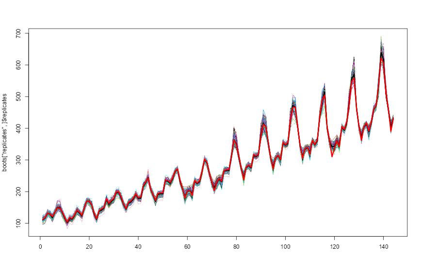
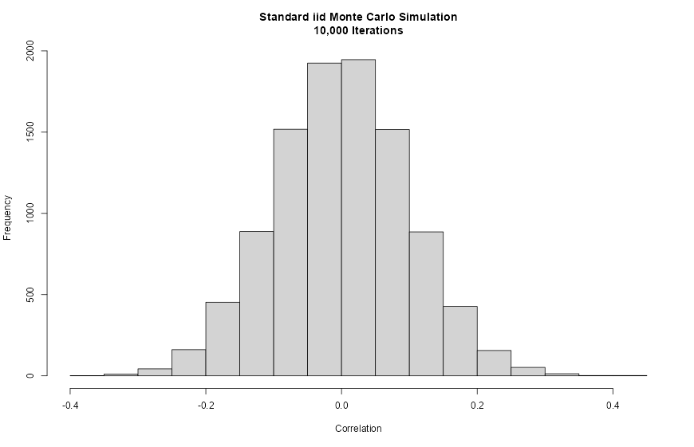
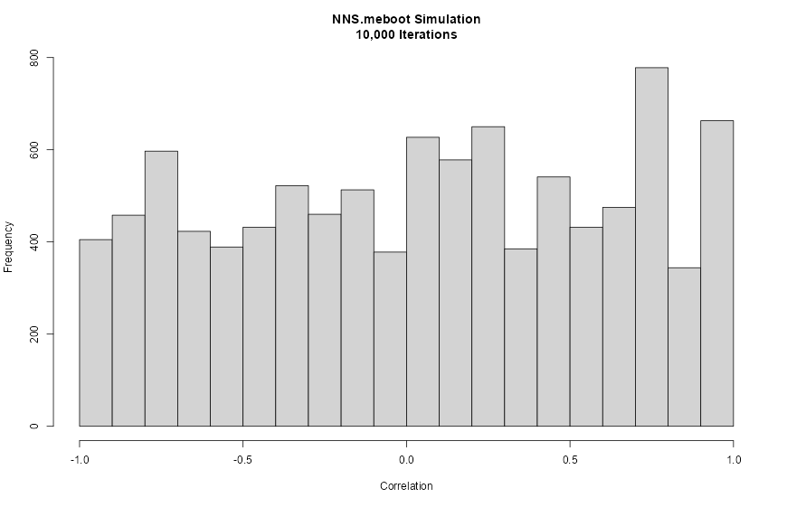

Chapter 17 Synthetic Data and Maximum Entropy Bootstrap
The previous chapter showed that threshold selection, directional probability bounds, and finite-sample stability are linked problems. These concerns naturally motivate resampling procedures that preserve empirical structure while generating synthetic realizations for robustness analysis. This chapter therefore turns to maximum entropy bootstrap and related synthetic-data methods as computational tools for the estimation and threshold-analysis problems developed in Chapter 16.
In many practical situations, however, analysts require not only statistical summaries of existing data but also synthetic data generation. Synthetic data can be used for simulation, risk analysis, forecasting evaluation, and Monte Carlo experiments.
A common approach for generating synthetic datasets is bootstrap resampling, which repeatedly samples from the observed data. While useful, classical bootstrap procedures assume independence or rely on model-based adjustments to accommodate dependence.
Time-series data present a particular challenge because temporal dependence must be preserved for synthetic samples to remain realistic.
The maximum entropy bootstrap (ME bootstrap) provides a solution. By constructing bootstrap samples that satisfy entropy-maximizing constraints while preserving the empirical dependence structure, the method produces synthetic time series that retain key statistical properties of the original data.
The NNS implementation, NNS.meboot, extends the original meboot algorithm in several important directions: it allows the user to specify an arbitrary target rank correlation between the original and resampled series, supports multiple dependence metrics native to the NNS framework, provides fine-grained control over the trend component of synthetic series, and enables a richer class of Monte Carlo simulations than classical iid resampling permits.
This chapter introduces bootstrap methods, explains the theory of the maximum entropy bootstrap, and demonstrates how synthetic time series can be generated and customized using NNS.meboot.
17.1 Bootstrap Methods
The bootstrap is a general method for estimating sampling distributions by resampling from observed data.
Suppose a dataset consists of observations
\[ x_1, x_2, \dots, x_n . \]
A bootstrap sample is obtained by drawing observations with replacement from this set, producing
\[ x_1^*, x_2^*, \dots, x_n^* . \]
Repeating this procedure many times produces an ensemble of synthetic datasets. Any statistic \(T(X)\) can then be evaluated across the bootstrap samples to approximate its sampling distribution.
Bootstrap procedures are widely used to estimate standard errors, confidence intervals, and bias corrections.
However, classical bootstrap resampling assumes that observations are independent and identically distributed (i.i.d.).
For time-series data this assumption fails because observations exhibit serial dependence. Simple resampling destroys the temporal ordering and therefore eliminates the structure that generated the data.
17.2 Limitations of Classical Bootstrap for Time Series
Several modifications of the bootstrap have been proposed to address dependence.
17.2.1 Block Bootstrap
The block bootstrap resamples contiguous blocks of observations rather than individual values. This partially preserves local dependence but introduces new design choices: block length, overlap structure, and edge effects. Choosing block parameters can strongly influence results.
17.2.2 Model-Based Bootstrap
Another approach fits a parametric time-series model such as ARIMA and then simulates synthetic data from the estimated model. This method inherits the limitations of the assumed model: specification risk, distributional assumptions, and sensitivity to parameter estimation.
Both approaches therefore require tuning choices or parametric assumptions.
17.2.3 The iid Correlation Constraint
A further limitation of standard iid Monte Carlo simulation (MCS) is less obvious but practically important. When a large number of resampled series is generated by iid shuffling with replacement, the Pearson correlation coefficients between those series and the original tend to cluster in a narrow range of approximately \([-0.3, 0.3]\), regardless of the underlying data. This occurs because the expected correlation between two independent random samples drawn from the same distribution is zero; sampling variability alone produces the observed spread, and no mechanism drives resamples toward strongly positive or negative correlation with the original. As a result, standard MCS does not provide adequate variety in simulated paths — tail scenarios and strongly correlated or anti-correlated futures are systematically underrepresented.
The maximum entropy bootstrap avoids these problems by constructing synthetic samples using information-theoretic principles that preserve the empirical dependence structure without specifying a parametric model, and by allowing the user to inject controlled variety through a target rank correlation parameter.
17.3 Maximum Entropy Principle
The maximum entropy principle originates from information theory.
Given incomplete information about a system, the probability distribution that best represents the current state of knowledge is the one that maximizes entropy subject to known constraints.
For a discrete distribution with probabilities \(p_i\), entropy is
\[ H = -\sum_i p_i \log p_i . \]
Maximizing entropy ensures that the resulting distribution introduces no additional assumptions beyond the constraints provided by the data.
In the context of bootstrap resampling, the constraints arise from the empirical properties of the observed time series. The goal is to generate synthetic sequences that satisfy these constraints while maximizing entropy, thereby producing the least-biased distribution consistent with the data.
17.4 Maximum Entropy Bootstrap for Time Series
The maximum entropy bootstrap constructs synthetic time-series samples through a sequence of steps that preserve essential features of the observed data.
Let the observed series be
\[ x_1, x_2, \dots, x_n . \]
The ME bootstrap algorithm proceeds conceptually as follows.
17.4.1 Step 1: Order Statistics
Sort the observations to obtain the ordered sample
\[ x_{(1)} \le x_{(2)} \le \dots \le x_{(n)} . \]
The ordering allows construction of piecewise intervals between adjacent values.
17.4.2 Step 2: Interval Construction
Define intervals between successive order statistics and extend them at the boundaries. These intervals represent regions in which synthetic observations may occur.
17.4.3 Step 3: Maximum Entropy Density
Within each interval a density function is constructed so that the resulting distribution maximizes entropy while preserving the empirical mean and variance. The interval means follow the Theil–Laitinen weighting scheme, which assigns weight \(0.25\) to each neighbor and \(0.50\) to the central value for interior points, with boundary adjustments at the extremes.
17.4.5 Step 5: Time Ordering
The sampled values are reordered to match the rank structure of the original series, restoring temporal dependence.
The resulting synthetic dataset preserves marginal distribution characteristics, dependence structure, and sample size. Because the method uses entropy maximization rather than parametric modeling, it remains distribution-free.
17.5 Dependence-Preserving Resampling
The key innovation of the maximum entropy bootstrap is the preservation of rank dependence.
Let
\[ R_t = \text{rank}(x_t) \]
denote the rank of observation \(x_t\) within the sample. After synthetic values are generated, they are assigned to time indices according to the same rank ordering:
\[ x_t^* = y_{(R_t)} \]
where \(y_{(i)}\) denotes the \(i\)-th ordered synthetic value.
This mapping ensures that the relative ordering of observations over time matches that of the original data. As a result, autocorrelation and other dependence features remain approximately preserved. Unlike block bootstrap methods, this approach requires no block-length tuning and does not impose parametric assumptions.
17.5.1 Theoretical Basis for Rank Matching
The theoretical justification for perfect rank matching was formalized by Joag-dev (1984), who showed that if one requires strong dependence between the original series \(x_t\) and any resampled series \(x_t^*\) without imposing parametric constraints, the order statistics of both series must conform with each other. This distribution-free measure of strong dependence corresponds to a Spearman rank correlation of unity.
However, as discussed in Section 16.6, the NNS implementation relaxes this constraint, allowing the user to specify any target rank correlation in \([-1, 1]\).
17.6 Arbitrary Spearman Rank Correlation: The rho Parameter
A major extension of NNS.meboot relative to the original meboot package is the ability to specify an arbitrary Spearman rank correlation \(\rho \in [-1, 1]\) between the original series and each bootstrap replicate. This is controlled by the rho argument.
The standard meboot algorithm always produces resamples with \(\rho = 1\) relative to the original series (perfect rank alignment). While this preserves dependence maximally, it limits the variety of simulated paths. For some applications, such as stress testing, scenario analysis, or Monte Carlo simulation, the analyst may want resamples that are weakly correlated, orthogonal, or even negatively correlated with the original.
17.6.1 How Rank Targeting Works
For each replicate, the algorithm constructs two extreme orderings:
- Aligned: synthetic values sorted to match the rank order of the original residuals (corresponds to \(\rho = +1\)).
- Anti-aligned: synthetic values sorted in the reverse rank order of the original residuals (corresponds to \(\rho = -1\)).
A convex combination of these two extremes is then optimized so that the resulting series achieves the target correlation \(\rho\) with the original. The optimization is performed replicate-by-replicate in residual space.
17.6.2 Dependence Metric Options
The type argument controls which dependence measure is targeted:
type |
Measure used |
|---|---|
"spearman" |
Spearman rank correlation (default) |
"pearson" |
Pearson linear correlation |
"NNScor" |
NNS nonlinear correlation |
"NNSdep" |
NNS nonlinear dependence |
The "NNScor" and "NNSdep" options integrate the NNS co-partial-moment framework directly into the bootstrap loop, allowing dependence targeting that captures nonlinear relationships. "NNScor" corresponds to the NNS nonlinear correlation coefficient introduced in Chapter 10, which detects monotonic and non-monotonic associations through co-partial moments; "NNSdep" corresponds to the directional dependence measure from Chapter 10, which quantifies the strength of dependence independently of its direction or functional form.
17.6.3 Simulation Evidence
Vinod and Viole (2020) demonstrate through simulation that for OLS inference on nonstationary I(1) data, meboot-based confidence intervals with \(\rho \ge 0.6\) outperform traditional OLS confidence intervals. When \(\rho = 1\), the average absolute deviation from the nominal rejection rate is approximately \(0.037\), far smaller than the OLS analog of approximately \(0.423\).
For random walk experiments, setting \(\rho < 0.5\) transforms the resampled series into stationary I(0) series — verified by the ADF test rejecting the unit-root null. This suggests that rho provides a new, model-free route to stationarizing nonstationary series as an alternative to differencing or de-trending.
17.7 Trend Decomposition and Drift Control
The NNS.meboot implementation operates on residuals rather than raw levels. Specifically:
- A linear trend is estimated from the original series via ordinary least squares.
- The ME bootstrap resampling is applied to the residuals.
- Reconstructed synthetic series are formed as \(\text{baseline}_t + \text{resampled residual}_t\), where the baseline is the fitted linear trend evaluated at each time point.
This decomposition ensures that the synthetic series inherit the correct distributional properties from the residuals while allowing independent control of the trend component.
17.7.1 Drift Arguments
Three arguments govern the trend component:
drift = TRUE(default): the original series’ estimated linear drift is preserved in all replicates.drift = FALSE: the trend is removed; replicates are centered around a flat baseline.target_drift: specifies an explicit drift value (e.g., a risk-free rate of return) to impose on all replicates.target_drift_scale: multiplies the estimated drift by a scalar, allowing proportional adjustments.
These options are particularly useful in financial applications where synthetic return paths should reflect a specific expected return or be drift-neutral for risk attribution purposes.
17.8 Synthetic Time-Series Generation with NNS.meboot
The NNS package provides NNS.meboot for generating synthetic bootstrap samples that preserve the empirical distribution and temporal structure of the original series.
17.8.1 Basic Usage
library(NNS)
# Generate 100 bootstrap replicates of AirPassengers
boots <- NNS.meboot(AirPassengers, reps = 100, rho = 1, xmin = 0)
# Verify Spearman correlation of ensemble to original
cor(boots["ensemble", ]$ensemble, AirPassengers, method = "spearman")
# Plot all replicates
matplot(boots["replicates", ]$replicates, type = "l")
# Overlay ensemble mean
lines(boots["ensemble", ]$ensemble, lwd = 3)
# Overlay original
lines(1:length(AirPassengers), AirPassengers, lwd = 3, col = "red")
NNS.meboot replicates with ensemble mean (black) and original series (red), illustrating dependence-preserving bootstrap paths.17.8.2 Return Object
NNS.meboot returns a named list with the following elements:
| Element | Description |
|---|---|
x |
Original input data |
replicates |
Matrix of bootstrap replicates (rows = time, cols = replicates) |
ensemble |
Row mean across all replicates |
xx |
Sorted order statistics of residuals |
z |
Class interval limits |
dv |
Absolute consecutive deviations |
dvtrim |
Trimmed mean of dv (used for tail extension) |
xmin |
Effective lower bound for ensemble values |
xmax |
Effective upper bound for ensemble values |
desintxb |
Desired interval means (Theil–Laitinen) |
ordxx |
Rank ordering of original residuals |
kappa |
Scale adjustment factor (if scl.adjustment = TRUE) |
17.8.3 Vectorized rho
The rho argument is vectorized, enabling a single call to produce replicates at multiple target correlations simultaneously:
# Three sets of replicates: orthogonal, half-correlated, and fully correlated
boots <- NNS.meboot(AirPassengers, reps = 10, rho = c(0, 0.5, 1), xmin = 0)
matplot(do.call(cbind, boots["replicates", ]), type = "l")
lines(1:length(AirPassengers), AirPassengers, lwd = 3, col = "red")For Monte Carlo workflows, the package also provides NNS.MC() as a convenience wrapper around this NNS.meboot-based simulation pipeline.
Similarly, target_drift is vectorized across drift levels while holding rho fixed:
# Replicates with two different target drift rates, rho fixed at 0
boots <- NNS.meboot(AirPassengers, reps = 10, rho = 0, xmin = 0,
target_drift = c(1, 7))
matplot(do.call(cbind, boots["replicates", ]), type = "l")
lines(1:length(AirPassengers), AirPassengers, lwd = 3, col = "red")17.9 Improved Monte Carlo Simulation
17.9.1 The Limitation of Standard iid MCS
Traditional Monte Carlo simulation generates synthetic paths by sampling with replacement from the observed series. While easy to implement, this approach inadvertently constrains the variety of simulated paths.
Empirically, when 10,000 iid resamples are drawn from a series, the Pearson correlation coefficients between each resample and the original series cluster in the range approximately \([-0.3, 0.3]\), with a pronounced concentration near zero. This happens because random shuffling with replacement systematically destroys correlation structure without exploring strongly positive or strongly negative paths.
set.seed(12345)
xt <- rnorm(1:100, mean = 9, sd = 12)
# Standard iid MCS: 10,000 replicates
X <- matrix(NA, nrow = 100, ncol = 10000)
for (i in 1:10000) {
X[, i] <- sample(xt, 100, replace = TRUE)
}
hist(cor(X, xt),
main = "Standard iid Monte Carlo Simulation\n10,000 Iterations",
xlab = "Correlation")
cor(X, x_t)), typically concentrated near zero.The resulting histogram is tightly centered on zero, confirming that standard MCS cannot generate strongly correlated or anti-correlated scenario paths.
17.9.2 Expanded Simulation via Vectorized rho
The NNS.meboot approach spans the full correlation range \([-1, 1]\) by generating one replicate per target \(\rho\) value across a fine grid, then expanding each to a set of standard meboot replicates:
library(NNS)
set.seed(12345)
xt <- rnorm(1:100, mean = 9, sd = 12)
# Step 1: Generate one replicate per rho across [-1, 1]
boots_grid <- NNS.meboot(xt, reps = 1,
rho = seq(-1, 1, 0.01),
drift = FALSE)
Z <- do.call(cbind, boots_grid["replicates", ])
# Step 2: Expand each to 50 standard meboot replicates
new_MCS <- list()
for (i in 1:dim(Z)[2]) {
new_MCS[[i]] <- NNS.meboot(Z[, i], reps = 50, rho = 1,
drift = FALSE)["replicates", ]$replicates
}
hist(cor(do.call(cbind, new_MCS), xt),
main = "NNS.meboot Simulation\n10,000 Iterations",
xlab = "Correlation")
NNS.meboot Monte Carlo correlation histogram after vectorized dependence targeting, spanning a wider \([-1,1]\) range.The resulting distribution of correlations is approximately uniform across \([-1, 1]\), confirming that the rho-vectorized approach provides a fundamentally richer simulation basis than standard iid MCS.
17.10 Applications in Forecasting and Risk Analysis
17.10.1 Financial Risk Management: Value at Risk and Expected Shortfall
The richer simulation produced by NNS.meboot is especially valuable in financial risk management, where tail behavior drives key risk metrics.
Vinod and Viole (2020) demonstrate this using ten years of daily S&P 500 returns (1998–2007) to generate simulations, then evaluating out-of-sample performance against the 2008 financial crisis. The simulation exercise generates approximately 2.5 million observations from each method to estimate the 1% Value at Risk (VaR), expected shortfall (ES), and minimum simulated return.
| Metric | Actual 2008 | Standard MCS | NNS.meboot |
|---|---|---|---|
| 99% VaR | −8.77% | −2.94% | −3.10% |
| Expected Shortfall | −8.92% | −3.66% | −3.91% |
| Minimum Value | −9.03% | −6.80% | −15.68% |
The NNS.meboot simulation reveals a minimum simulated daily return exceeding −15%, a result that would have warned investors of extreme tail risk before the crisis. The standard MCS minimum of approximately −6.8% — itself less than the observed worst day in the preceding nine years of data — conveyed a dangerously false sense of security.
The sym = TRUE argument forces the maximum entropy density to be symmetric around zero within each interval. For financial return series — where positive and negative deviations of equal magnitude should receive equal probability mass — this prevents the ME density from inheriting any asymmetry that may be present in the residuals, producing a more conservative and balanced tail exploration. Combined with xmin set to cap extreme losses, the simulation explores the left tail without imposing a parametric distributional form:
library(quantmod)
library(NNS)
getSymbols("^GSPC", from = "1998-01-01", to = "2009-01-01")
SPX_train <- as.numeric(dailyReturn(GSPC["1998-01::2008-01"]))
SPX_test <- as.numeric(dailyReturn(GSPC["2008"]))
# Generate paths across the full rho range
SPX_boots <- NNS.meboot(SPX_train, reps = 1,
rho = seq(-1, 1, 0.01),
drift = FALSE)
SPX_meboot_grid <- do.call(cbind, SPX_boots["replicates", ])
# Expand each path to 5 replicates with symmetric ME density
new_SPX <- list()
for (i in 1:dim(SPX_meboot_grid)[2]) {
new_SPX[[i]] <- NNS.meboot(SPX_meboot_grid[, i], reps = 5,
rho = 1, drift = FALSE,
sym = TRUE)["replicates", ]$replicates
}
all_returns <- unlist(new_SPX)
# Risk metrics
quantile(all_returns, 0.01) # 99% VaR
mean(all_returns[all_returns <= quantile(all_returns, 0.01)]) # ES
min(all_returns) # Minimum simulated return17.10.2 Forecast Model Evaluation
Bootstrapped time series allow analysts to evaluate forecast stability, assess model sensitivity, and compute predictive distributions without imposing distributional assumptions on forecast errors.
17.10.3 Stationarity Transformation
Setting rho to small values (below approximately \(0.5\)) produces resampled series that the ADF test classifies as stationary, even when the original series is I(1). This provides a model-free alternative to differencing or de-trending that may be preferable when the analyst does not wish to commit to a specific transformation.
17.11 Relationship to the NNS Framework
The maximum entropy bootstrap fits naturally within the directional statistics framework developed throughout this book.
Directional methods emphasize distributional structure relative to benchmarks, while ME bootstrap preserves the empirical distribution and dependence relationships from which those directional statistics are computed. Synthetic samples generated through NNS.meboot therefore maintain the properties required for downstream NNS analyses, including:
- partial-moment estimation,
- directional dependence measurement via
NNS.dep, - distribution comparison via NNS ANOVA,
- nonparametric forecasting.
The type = "NNScor" and type = "NNSdep" options close this loop explicitly: the bootstrap targeting criterion is itself computed using NNS co-partial moments, so the resampling respects the same nonlinear dependence geometry as the rest of the NNS toolkit.
By combining entropy-based resampling with directional statistical measures, analysts obtain a fully nonparametric workflow for simulation and inference.
17.12 Summary
This chapter introduced synthetic data generation through the maximum entropy bootstrap as implemented in NNS.meboot.
Key points include:
- Classical bootstrap methods assume independence and may destroy temporal structure.
- Standard iid MCS generates simulated paths with correlations concentrated near zero, failing to represent tail or counter-trend scenarios.
- The maximum entropy bootstrap constructs synthetic samples by maximizing entropy subject to empirical constraints, preserving marginal distributions and dependence structure without parametric assumptions.
- Rank-based reordering preserves the temporal dependence structure of the original series.
NNS.mebootextends the originalmebootalgorithm with a vectorizedrhoargument that targets any Spearman rank correlation in \([-1, 1]\), multiple dependence metric options including NNS-native measures, and drift decomposition for precise trend control.- The expanded Monte Carlo simulation enabled by vectorized
rhospans the full correlation range and provides materially richer risk estimates, as demonstrated in the S&P 500 stress-testing example. - Low
rhosettings offer a model-free approach to generating stationary resamples from nonstationary series.
Together with the prediction and inference methods developed in earlier chapters, the ME bootstrap provides a powerful tool for distribution-free simulation and forecasting within the NNS framework.
17.13 References
- Joag-Dev, K. (1984). Measures of dependence. In P. K. Krishnaiah & P. K. Sen (Eds.), Handbook of Statistics (Vol. 4, pp. 79–88). North-Holland.
- Vinod, H. D. (2004). Ranking mutual funds using unconventional utility theory and stochastic dominance. Journal of Empirical Finance, 11(3), 353–377.
- Vinod, H. D. (2006). Maximum entropy ensembles for time series inference in economics. Journal of Asian Economics, 17(6), 955–978.
- Vinod, H. D. (2013). Maximum entropy bootstrap algorithm enhancements (SSRN Working Paper 2285041). https://doi.org/10.2139/ssrn.2285041
- Vinod, H. D., & López-de-Lacalle, J. (2009). Maximum entropy bootstrap for time series: The meboot R package. Journal of Statistical Software, 29(5), 1–19.
- Vinod, H. D., & Viole, F. (2020). Arbitrary Spearman’s rank correlations in maximum entropy bootstrap and improved Monte Carlo simulations (SSRN Working Paper 3621614). https://doi.org/10.2139/ssrn.3621614
- Viole, F. (2016). NNS: Nonlinear nonparametric statistics. R package. https://cran.r-project.org/package=NNS